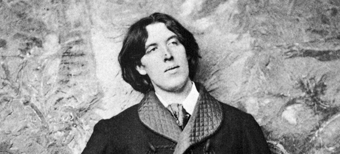

Oscar Wilde w anegdotach
Ksi¹¿ka Oscar Wilde o sztuce i ¿yciu jest prób¹ przybli¿enia refleksji Wilde’a o sztuce i ¿yciu, ukazania ich aktualnoœci, g³êbi, uniwersalnej wartoœci.
W pierwszej czêœci zosta³y wybrane i uporz¹dkowane tematycznie jego wypowiedzi na temat sztuki i ¿ycia (podano je w jêzyku angielskim i polskim t³umaczeniu). Czêœæ druga to omówienie problematyki zawartej w tych s¹dach. Appendix zawiera m.in. szczegó³owe kalendarium, informacje dotycz¹ce adaptacji utworów oraz opinie znanych postaci odnosz¹ce siê do Wilde’a b¹dŸ jego twórczoœci.
Kontakt i zamówienia: mywildbook@gmail.com

Wydawnictwo: WILDBOOK
Rok wydania: 2010
Oprawa: twarda
Format: 205 × 145
Liczba stron: 224
Cena: 42 z³
ISBN: 978-83-930701-0-7
O SWOJEJ TWÓRCZOŒCI

Oscar Wilde (styczeñ 1882), fot. Napoleon Sarony, Ÿród³o: Wikimedia Commons (modyfikacja w³asna)
Gdy w styczniu 1882 roku przyby³ do Nowego Jorku, celnik zapyta³ go, czy ma coœ do zadeklarowania. „Nie mam nic do zadeklarowania – odpar³ Wilde i zawiesi³ g³os – oprócz mojego geniuszu”.

Lord Avebury og³osi³ listê stu najlepszych ksi¹¿ek. Wilde zosta³ zaproszony na spotkanie, na którym toczy³a siê dyskusja na ten temat. Poproszono, aby sporz¹dzi³ swoj¹ listê takich ksi¹¿ek. „To bêdzie chyba niemo¿liwe” – odpar³. A po chwili wyjaœni³ przyczynê: „Bo napisa³em tylko piêæ”.
George Alexander – biznesmen, aktor, dyrektor teatru St. James – poprosi³ Wilde’a o napisanie sztuki i da³ mu sto funtów zaliczki. Pewnego dnia zapyta³, kiedy zobaczy tê sztukê. „Mój drogi, nie jest jeszcze napisana, wiêc jak mo¿esz j¹ zobaczyæ?” – odpar³ Wilde. George Alexander próbowa³ siê dowiedzieæ, czy chocia¿ zacz¹³ j¹ pisaæ. „Piórem jeszcze nie... ale mam j¹ ca³¹ napisan¹ w g³owie i s¹dzê, ¿e tam musi na razie pozostaæ” – us³ysza³ szczer¹ odpowiedŸ. „Ale, czy nie chcesz zarobiæ pieniêdzy? – próbowa³ nalegaæ. „Wolê, aby je inni dla mnie zarabiali... Aha... by³bym zapomnia³... tak... bêdê pewnie musia³ coœ zrobiæ. Jestem ci winien sto funtów”. Alexander skomentowa³ to jednak uprzejmie: „Tym siê nie przejmuj”. „Nie przejmujê siê” – odpar³ Wilde.
W Filadelfii znalaz³ wydawcê dzie³a Rennella Rodda Rose Leaf and Apple Leaf.
Wydawca zgodzi³ siê wydaæ Rodda, jeœli Wilde napisze przedmowê. Wilde napisa³, ale ksi¹¿kê zadedykowa³ sobie:
„Oscarowi Wilde’owi
Bratu mego serca
Tych kilka pieœni i wiele innych, które powstan¹”.
W 1888 roku ukaza³ siê The Woman’s World. Wilde zosta³ redaktorem magazynu i pisa³ Notatki literackie. Na pocz¹tku by³ zachwycony i pe³en zapa³u, w 1889 roku by³ ju¿ znudzony. Redaktor jednego z czasopism, William Ernest Henley, zapyta³ go, jak czêsto bywa w biurze. „Bywa³em trzy razy na tydzieñ godzinê dziennie, ale teraz opuszczam jeden dzieñ” – odpar³ Wilde. „Mój Bo¿e – wykrzykn¹³ Henley – jestem w redakcji piêæ razy na tydzieñ po piêæ godzin dziennie, a gdy chcê opuœciæ dzieñ, zbiera siê specjalne posiedzenie”.
Gdy sta³ siê osob¹ znan¹, dzie³a cieszy³y siê zainteresowaniem odbiorców, wydawca zaproponowa³ mu napisanie ksi¹¿ki licz¹cej 100 tysiêcy wyrazów. Wilde opar³: „Niestety, to jest niemo¿liwe… angielski nie ma 100 tysiêcy wyrazów”.
W 1892 roku, po sukcesie scenicznej premiery Wachlarza Lady Windermere, reporter zapyta³ go o plany literackie. „Chcê napisaæ jeszcze kilkanaœcie sztuk”. „W jakiej kolejnoœci?” – pyta³ dalej. „To oczywiste. Wszystko naraz”.
Bardzo wielu twórców wykorzystywa³o aforyzmy i historie wymyœlone przez Wilde’a. Kiedyœ zwróci³ siê do Cotsforda Dicka, który sparafrazowa³ kilka jego wypowiedzi w The World: „Pan i ja powinniœmy siê nazywaæ: rolnicy”. Na pytanie Dicka „dlaczego?” odpar³: „Poniewa¿ ja siejê, a Pan zbiera ¿niwo”.
Jeden z lordów skomentowa³ jego utwory: „Panie Wilde, takich postaci, jakie Pan tworzy w ksi¹¿kach, nie spotyka siê w ¿yciu”. „Ma Pan racjê… Gdyby istnia³y naprawdê – odrzek³ Wilde – po co mia³bym je stwarzaæ. Genialne w literaturze jest to, ¿e powo³uje do ¿ycia œwiat nieistniej¹cy w rzeczywistoœci”. Innym razem stwierdzi³: „Jedyna forma beletrystyki, w której prawdziwe postacie s¹ na miejscu – to historia. W powieœci s¹ one nieznoœne”. Mawia³ te¿: „Zadaniem artysty jest zmyœlaæ, a nie spisywaæ kronikê”.
Jedno z pism poprosi³o o egzemplarz nowego wydania jego wierszy. Odpar³, ¿e tomik wydano jedynie w 200 egzemplarzach przeznaczonych dla mi³oœników poezji, a nie dla recenzentów.
Mery Prescott chcia³a zagraæ w jego sztuce Vera, albo nihiliœci. Proponowa³a jednak pewne zmiany. „Kim¿e jestem, bym mia³ poprawiaæ arcydzie³o” – odrzek³ Wilde.
W 1884 roku ukaza³ siê w Anglii jego poemat Sfinks. Przyjacielowi wyjaœni³, dlaczego publikacja zosta³a wydana w tak ma³ym nak³adzie: „Pierwsz¹ moj¹ myœl¹ by³o wydrukowanie trzech egzemplarzy: jeden dla mnie, drugi dla British Museum, a trzeci dla Nieba. Mia³em w¹tpliwoœci co do British Museum”.
W 1891 roku George Alexander za sztukê Wachlarz lady Windermere zaproponowa³ Wilde’owi tysi¹c funtów. „Mój drogi, mam takie zaufanie do twego wytrawnego s¹du, ¿e nie pozostaje mi nic innego, jak odrzuciæ twoj¹ hojn¹ propozycjê” – odrzek³ Wilde i za¿¹da³ honorarium procentowego. Okaza³o siê to w pe³ni uzasadnione – sztuka odnios³a wielki sukces i ju¿ w pierwszym roku zarobi³ siedem tysiêcy funtów.
Po premierze Wachlarza lady Windermere, owacjach i okrzykach „Autor!”, Wilde wyszed³ na scenê i powiedzia³: „Panie i Panowie! Wieczór dzisiejszy sprawi³ mi ogromn¹ przyjemnoœæ. Aktorzy oddali w sposób czaruj¹cy urocz¹ sztukê, publicznoœæ oceni³a j¹ z niezwyk³¹ inteligencj¹. Gratulujê wam wielkiego sukcesu przedstawienia, przekona³em siê, ¿e macie niemal tak wysokie pojêcie o sztuce, jak ja”. PóŸniej swój sukces skomentowa³: „Przypuszczam, ¿e s¹ ludzie dowcipniejsi ni¿ autor Wachlarza lady Windermere. Ale nawet jeœli tak jest, nigdy ich nie spotka³em”.
W Kobiecie bez znaczenia w roli lorda Illingwortha wyst¹pi³ Herbert Beerbohm Tree – wybitny aktor, dyrektor teatru Haymarket. Po premierze Wilde wszed³ do jego garderoby i rzek³: „Bêdê zawsze uwa¿a³ Pana za najlepszego krytyka moich sztuk”. Tree spojrza³ na niego zdziwiony: „Ale¿ ja nigdy nie krytykowa³em Pana sztuk”. „W³aœnie dlatego” – odpar³ Wilde. Tree stworzy³ w tej sztuce znakomit¹ kreacjê.
Sztuka B¹dŸmy powa¿ni na serio powsta³a w ci¹gu trzech tygodni. Wilde wiêkszoœæ dzie³ pisa³ bardzo szybko. Jeœli podczas prób okazywa³o siê, ¿e jakaœ scena wymaga zmian, potrafi³ przez kilka minut zrobiæ poprawki. B¹dŸmy powa¿ni na serio re¿yserowa³ George Alexander w teatrze St. James. Próbowa³ przekonaæ Wilde’a, aby usun¹³ jedn¹ ze scen, ale ten stanowczo siê temu sprzeciwia³: „Czy zdajesz sobie sprawê, jakiego ¿¹dasz ode mnie poœwiêcenia?”. Alexander nalega³: „Umieœcisz j¹ w innej sztuce”. „Mo¿e siê nie nadawaæ do innej sztuki” – oponowa³ autor. Re¿yser by³ nieugiêty: „Jesteœ tak zdolny, ¿e wymyœlisz sto równie dobrych powiedzeñ”. Wilde odpar³: „Oczywiœcie... nawet tysi¹c, jeœli bêdzie potrzeba. Ale nie o to chodzi. Scena, któr¹ ty uwa¿asz za zbyteczn¹, kosztowa³a mnie bardzo du¿o trudu i napiêcia nerwów. Mo¿e mi nie uwierzysz, ale dajê ci s³owo honoru, ¿e napisanie jej zajê³o mi ca³e piêæ minut”.
Przed premier¹ B¹dŸmy powa¿ni na serio, 18 stycznia 1895 roku ukaza³ siê w The St. James Gazette wywiad Roberta Rossa z Wilde’em. Oto jego fragmenty:
– Co nazwa³by Pan idealn¹ krytyk¹ teatraln¹?
– Jeœli chodzi o moje utwory, uznanie bez zastrze¿eñ.
– Czy s¹dzi Pan, ¿e krytycy zrozumiej¹ tê sztukê?
– Mam nadziejê, ¿e nie.
– Jakiego rodzaju sztuki mo¿emy siê spodziewaæ?
– Jest p³ytka w sposób doskona³y, bañka mydlana fantazji, i posiada w³asn¹ filozofiê.
– W³asn¹ filozofiê?
– Dowodzi, ¿e powinniœmy traktowaæ powa¿nie wszystko, co b³ahe w ¿yciu, a rzeczy powa¿ne traktowaæ ze szczer¹ i wyuczon¹ lekkomyœlnoœci¹.
Podczas prób B¹dŸmy powa¿ni na serio Wilde nic nie komentowa³. Jednak po nich czêsto niepokoi³ re¿ysera George’a Alexandra – zg³asza³ zastrze¿enia, uwagi, udziela³ wskazówek. Alexander mia³ tego doœæ i poprosi³, aby przyszed³ dopiero na premierê. Wilde zgodzi³ siê i zaprosi³ George’a Alexandra (gra³ Johna Worthinga) i Allana Ayneswortha (wcieli³ siê w Algernona Moncrieffa) na kolacjê. Powita³ ich w hallu: „Moi drodzy... Mam wam tylko jedn¹ rzecz do powiedzenia. ¯aden z was nie jest moim ulubionym aktorem. ChodŸmy na kolacjê”.
Jeden z reporterów zapyta³ go, czy B¹dŸmy powa¿ni na serio odniesie sukces. Wilde odpar³: „�le Pan stawia kwestiê. Sztuka ju¿ odnios³a sukces. Pozostaje tylko w¹tpliwoœæ, czy premiera stanie siê sukcesem”. Premiera odby³a siê 14 lutego 1895 roku w St. James’s Theatre. Sztuka cieszy³a siê wielkim powodzeniem, ale naprawdê wielki sukces odnios³a, kiedy George Alexander wznowi³ j¹ w 1909 roku (by³a grana przez 11 miesiêcy, Alexander zarobi³ prawie 22 tysi¹ce funtów).
Podczas procesu oskar¿yciel Edward Carson próbowa³ dowieœæ, ¿e list Wilde’a do lorda Douglasa jest niemoralny. Wilde odpowiedzia³: „Uwa¿am, ¿e to piêkny list. To poemat. Nie pisa³em zwyk³ego listu. Móg³by mnie Pan równie dobrze poddaæ indagacji, czy Król Lear albo któryœ z sonetów Szekspira jest przyzwoity”. Carson kontynuowa³: „Przypuœæmy, ¿e list ten napisa³ ktoœ, kto nie jest artyst¹, czy uzna³by Pan, ¿e jest to list przyzwoity?”. „Listu tego nie móg³ napisaæ cz³owiek, który nie jest artyst¹ – rzek³ Wilde. I doda³: „Móg³ go napisaæ tylko artysta. Nie potrafi³by napisaæ podobnym jêzykiem, gdyby nie by³ literatem”. Carson próbowa³ dalej: „Czy to jest zwyczajny list?”. „Wszystko, co piszê, jest nadzwyczajne” – odpar³ Wilde.
W lutym 1899 roku, a zatem ju¿ po uwolnieniu Wilde’a z wiêzienia, Leonard Smithers wyda³ B¹dŸmy powa¿ni na serio. Wilde skomentowa³, ¿e jego nazwisko na karcie tytu³owej zosta³o zast¹pione nazwiskiem „autora Wachlarza lady Windermere”.
Do André Gide’a powiedzia³: „Ca³y mój geniusz wcieli³em w ¿ycie, w dzie³a – tylko talent”.